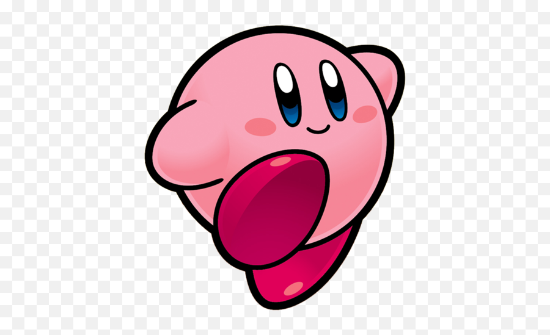
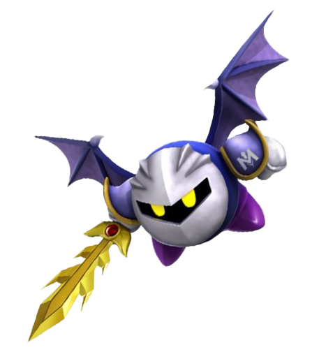
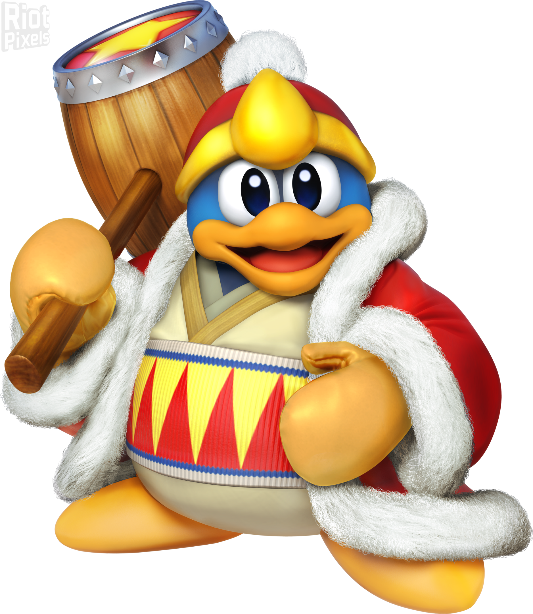

Personajes Principales
Personajes principales de la franquicia de kirby

Kirby
El protagonista de la franquicia, tiene la habilidad de absorver enemigos y poder lanzarlos como estrellas o comerlos para copiar sus poderes, puede inflarse de aire y volar

Meta Knight
un enigmatico personaje, al inicio fue un enemigo pero acabo volviendose un aliado jugable, porta una poderosa espada llamada galaxia

Rey Dedede
el amienemigo de kirby, al inicio fue un enemigo per con el paso del tiempo acabo siendo un personaje jugable, aungenas veces es representado como un personaje egoista y codicioso o alguien con motivos heroicos

bandana dee
su primera aparicion como personaje jugable fue en kirby dream land, despues se definio como un amigo cercano de kirby